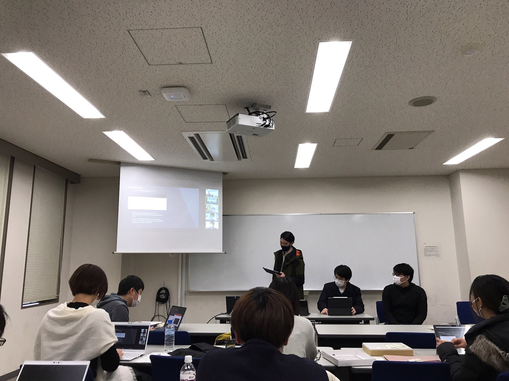

最近あったニュース等を紹介しています。
2023.01.14 清田ゼミとのインゼミを行いました
12月10日に慶応義塾大学の清田ゼミとのインゼミを行いました。インゼミでの発表や質疑応答は英語で行われました。多くの経済学の研究は英語で行われていますが，英語でコミュニケーションをとることの難しさを痛感し，さらなる研鑽を積まなければならないなと思いました。また，双方とも研究内容がとてもレベルの高いもので，よく練られているなと感じました。これを機にさらなるパワーアップを図っていければなと思います。
2023.02.04 遠藤ゼミとのインゼミを行いました
2月4日に慶応義塾大学の遠藤ゼミとのインゼミを行いました。非常にレベルの高い研究発表を聞き、良い刺激になりました。
遠藤ゼミは商学部のゼミということで内容を理解できないのではないかと当初は不安でしたが，
社会科学的な問いに対し，学問的な手法を用いて結論を出すことの重要性は分野で細かな違いこそあれ，通底するものは同じだなと感じました。
課題を立てるところ，手法を選ぶところを含め学びがたくさんあったので，これからの研究や後輩の研究に役立てていければと思います。
2023.02.01 研究成果発表会を行いました
2月1日に毎年恒例の研究成果発表会を行いました。昨年は7グループの発表でしたが、今年は短修生1名、4回生5名、3回生3グループの計9つの発表があり、
かなり充実した発表会になりました。ディスカッションには修士課程や博士後期課程の方々が参加してくださり，同じように研究をしている
先輩方からの意見を聞くことができ，非常に貴重な経験だと身に沁みました。
また短修生の修士論文や4回生の卒業論文やゼミ論文はどれも参考になるものばかりで、３回生のグループ研究論文においても英語で書かれた ものがあったりととても苦労の形跡が見られました。
みなさん、お疲れさまでした。（3回生：吉岡）
また短修生の修士論文や4回生の卒業論文やゼミ論文はどれも参考になるものばかりで、３回生のグループ研究論文においても英語で書かれた ものがあったりととても苦労の形跡が見られました。
みなさん、お疲れさまでした。（3回生：吉岡）
2023.01.14 清田ゼミとのインゼミを行いました

1月14日に慶応義塾大学の清田ゼミとのインゼミを行いました。清田ゼミには多くの留学生が属していることもあり，発表や質疑応答
は英語で行われました。自分自身あまり英語を使う機会がなかったので，とても苦労しましたが，同時にとても良い機会になったと思います。
またインゼミ後の飲み会においても会話がはずみ，よい交流の機会になったと思います。
2022.02.03 研究成果発表会を行いました

2月3日に毎年恒例の研究成果発表会を行いました。昨年は2グループのみの発表でしたが、今年は4回生5名、3回生2グループの計7つの発表があり、
かなり充実した発表会になりました。また、今回は博士後期課程の先輩方がディスカッションの準備をしてくださったので、
鋭い意見が飛び交い、発表者側も自らの研究を見直す非常に良い機会になったように思います。
発表会には、来年度から神事ゼミに参加する1回生と神事ゼミ所属の2−4回生が参加するのですが、今年は特に2回生から積極的な質問が多く、 有意義なものになりました。
みなさん、お疲れさまでした。（4回生：川口）
発表会には、来年度から神事ゼミに参加する1回生と神事ゼミ所属の2−4回生が参加するのですが、今年は特に2回生から積極的な質問が多く、 有意義なものになりました。
みなさん、お疲れさまでした。（4回生：川口）
2022.01.19 遠藤ゼミとのインゼミを行いました
1月19日に慶応義塾大学の遠藤ゼミとのインゼミを行いました。非常にレベルの高い研究発表を聞き、良い刺激になりました。
慶應義塾大学の方にお邪魔して，インゼミを行わせていただきましたが，他大学に行くということも含めてとても良い経験になった
と感じます。
2022.01.10 清田ゼミとのインゼミを行いました
1月10日に慶応義塾大学の清田ゼミとのインゼミを行いました。非常にレベルの高い研究発表を聞き、良い刺激になりました。
清田ゼミでは、学生の大部分を留学生が占めているそうで、発表から質疑応答まですべて英語で行われました。
普段、英語を話す機会がないため、かなり大変でした。
2022.04.08 HPを作成しました
神事ゼミのHPを作成しました。最近会ったニュース等を載せていきます。